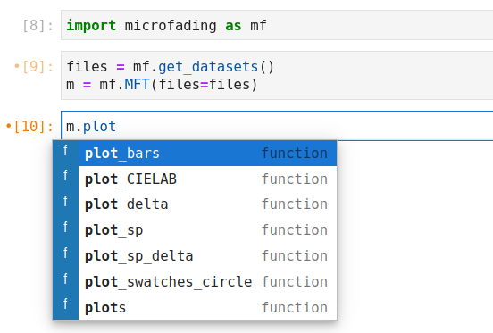
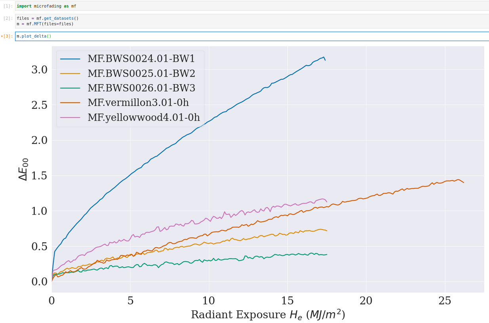

Data visualization
In this section, we will show you how to create visualizations of your microfading data. A summary of this page has been compiled inside a Jupyter notebook and is available for download: Download notebook
The plot functions, accessible after creating an instance of the microfading class, start with the verb "plot", as illustrated below. The plot functions are briefly described in Table 1.

The plot functions
Table 1. Description of the plot functions.
Function name |
Description |
|---|---|
plot_bars() |
plot the value of a single colorimetric coordinates at a given light dose |
plot_coordinates() |
plot the CIE colorimetric coordinates as a function of the light energy |
plot_CIELAB() |
plot the trajectory of the \(L^*a^*b^*\) coordinates in the CIELAB colour space |
plot_delta() |
plot the \(\Delta\) curves for one or several CIE colour coordinates |
plot_sp() |
plot the reflectance spectra |
plot_sp_delta() |
plot the difference between two reflectance spectra |
plot_swatches_circle() |
plot the colour changes as a series of coloured circles |
plot_swatches_rectangle() |
plot the colour changes as two coloured rectangles next to each other |
plots() |
Basic plotting¶
Each plot function has been written so that you can use them without passing any arguments, as illustrated below. Such a visualization will render the default behaviour of each function. The following section shows how to pass arguments to the function to adjust some aspects of the plots.

Basic plot.
Advanced plotting¶
To modify the aspects of the plots, you will need to enter the information, as key : value, inside dictionaries. There are five dictionaries that encompass all aspects of plotting:
- data_settings : aspects directly related to the data
- figure_settings : aspects about the figure
- legend_settings : aspects about the legend
- lines_settings : aspects about the data lines
- text_settings : add a text box inside the figure
As an illustration, the following lines of code show you how to modify the size of a figure:
m = mf.MFT(files=files)
m.plot_delta(figure_settings={'figsize':(15,10)})
Though the same dictionaries are used across all the plot functions, the valid keys for each dictionary can differ from one function to another. Table 2 lists all the valid keys according to each plot function. For a thorough description of each key and their corresponding values, see the paragraphs below.
Table 2. Valid keys for each function.
Plot functions |
Parameters |
Valid keys |
|---|---|---|
| plot_CIELAB | data_settings figure_settings legend_settings lines_settings |
dose_unit, dose_values, derivation, smoothing |
| plot_coordinates | data_settings figure_settings legend_settings lines_settings |
dose_unit, dose_values, derivation, smoothing |
| plot_delta | data_settings figure_settings legend_settings lines_settings text_settings |
dose_unit, dose_values, derivation, smoothing figsize, title, xlabel, ylabel, xlim, ylim, fontsize, fontsize_title fontsize, labels, ncols, position, title colors, ls, lw text, xy, fontsize |
| plot_sp | data_settings figure_settings legend_settings lines_settings text_settings |
mode, derivation, dose_unit, smoothing, wl_range figsize, title, xlabel, ylabel, xlim, ylim, fontsize, fontsize_title fontsize, labels, ncols, position, title colors, ls, lw text, xy, fontsize |
data_settings:¶
The data_settings dictionary encompasses parameters related to the microfading data, for which the following keys can be used:
-
dose_unit [str], by default 'He'
This key defines the unit of the light dose energy. Any of the following units can be used as a value: 'He', 'Hv', 't'.
'He' corresponds to radiant energy (MJ/m2)
'Hv' corresponds to exposure dose (Mlxh)
't' corresponds to times (sec)
e.g. : m.plot_delta(data_settings={'dose_unit':'He'})
-
dose_values [int, float, list, tuple]
This key defines the dose values for which the colourimetric values will be returned. A single dose value (an integer or a float number) can be entered. A list of dose values, as integer or float, can also be entered. A tuple of three values (min, max, step) will be used in a numpy.arange() function to return an array of dose values.
-
derivation [bool], by default False
This key defines whether to compute the first derivative values. When True, it will plot the derivative values of the colourimetric delta values.
-
mode [str], by default 'R'
It defines the type or mode of the measurement (absorbance or refectance). When 'R', it returns reflectance spectra. When 'A', it returns absorption spectra using the following equation: A = -log(R).
-
smoothing [tuple of 2 integers], by default (1,0)
This key defines whether the data should be smoothed. It takes a tuple of two integers as value which is used as input for the Savitzky-Golay filter. The first value corresponds to the window_length and the second to the polyorder value. The first value should always be greater than the second value.
-
wl_range [tuple of 2 integers], by default None
It defines the wavelength range with a two-values integer tuple corresponding to the lowest and highest wavelength values. When None, it plot all the available wavelengths.
figure_settings:¶
The figure_settings concerns all aspects related to the figure, for which the following keys can be used:
-
figsize [tuple], by default (15,9)
It defines the size of the figure.
-
fontsize [int], by default 18
It defines the fontsize of the axes labels and ticks.
-
fontsize_title [int], by default 20
It defines the fontsize of the title if any.
-
title [str], by default None
Whether to display a title.
-
xlabel [str]
Label of the x-axis. The default value varies according to the plot function.
-
xlim [tuple], by default 0
It defines the limits of the x-axis as a tuple of two numerical values (start, end).
-
ylabel [str]
Label of the y-axis. The default value varies according to the plot function.
-
ylim [tuple], by default None
It defines the limits of the y-axis as a tuple of two numerical values (start, end).
legend_settings:¶
The legend_settings concerns all aspects related to the legend, for which the following keys can be used:
-
fontsize [int]
Fontsize of the legend labels
-
labels [list]
-
ncols [int], by default 1
Number of columns for the labels
-
position [str], by default 'in'
Whether to display the legend inside ('in') or outside ('out') the figure.
-
title [str], by default None
Whether to display a title above the legend.
lines_settings:¶
The lines_settings concerns all aspects related to the data lines, for which the following keys can be used:
-
colors [str, list, float]
Modify the colour of the lines or points. You can enter the following types of input values:
- String: it can be any colour compatible with the matplotlib colour list. In that case, all the lines or points have the same colour.
eg: "green", "midnightblue", etc.
- List of string: If you want to attribute a specific color to each curve or point. The amount of string elements in the list should therefore before equal to the amount of curves.
eg: ["blue", "chartreuse"]
- 'sample': This will render each curve or point according to the colour of the corresponding sample. It takes the first reflectance spectrum of the microfading data and compute the sRGB values.
- Float: a float between 0 and 1 will give a grey line ranging from black (0) to white (1).
- String: it can be any colour compatible with the matplotlib colour list. In that case, all the lines or points have the same colour.
-
ls [str, list], by default '-'
Modify the style of data lines. You can enter the following types of input values:
- String: it can be any line styles compatible with the matplotlib styles. In that case, all the lines have the same style. The most common styles are: "-", "--", ":", "-.".
eg: "-" or "--", etc.
- List: a list of string combining any line styles compatible with the matplotlib styles. n that case, all the lines have the same style. The most common styles are: '-', '--', ':', '-.'.
eg: ["-", "--", ":", "-"], etc.
- String: it can be any line styles compatible with the matplotlib styles. In that case, all the lines have the same style. The most common styles are: "-", "--", ":", "-.".
-
lw [int, list], by default 2
text_settings:¶
The text_settings dictionary enables you to insert a text block inside the figure, for which the following keys can be used:
-
text [str]
The text you wish to display.
-
xy [tuple of two numerical values]
The position of the text inside figure.
-
fontsize [int]
Fontsize of the text.
Save plots¶
If you want to save the plot as an image file, then set the save parameter to True. I also recommend to enter a value for the path_fig parameter, otherwise it will save the figure in the current working directory with a very basic name.